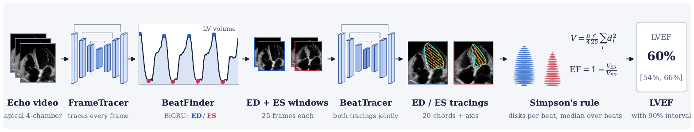
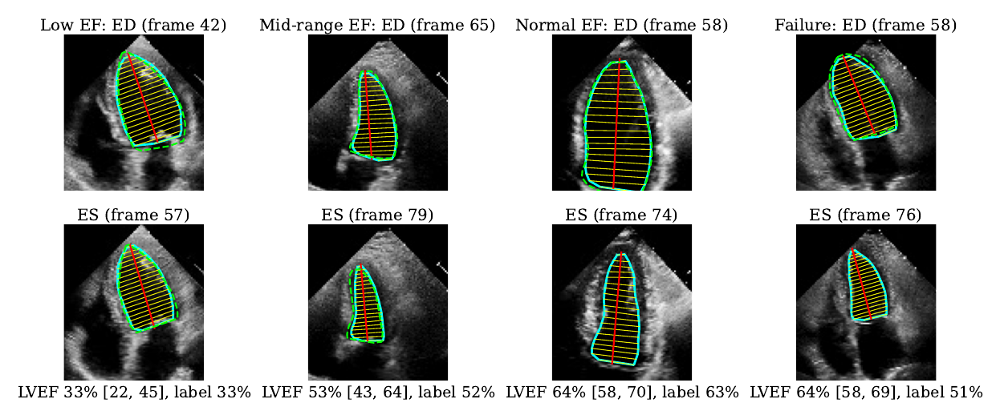
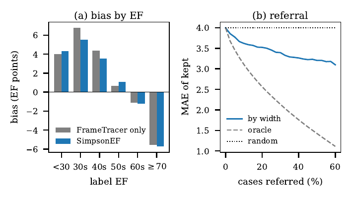
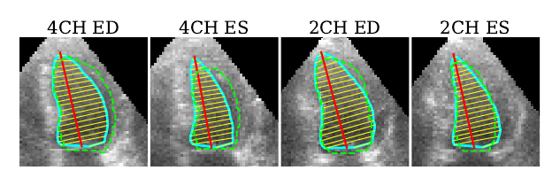

Explainable echocardiography
Ejection fraction the way a sonographer measures it
SimpsonEF draws the left-ventricular tracing at end-diastole and end-systole of every beat and applies Simpson's method of disks. There is no learned EF regressor: every estimate is a tracing you can see and a formula you can check.
Try it on an echo video
Load an apical 4-chamber echo clip (MP4, WebM or AVI your browser can play). The video is processed on your device and never uploaded. Research software only, not for clinical use.
| Beat | ED frame | ES frame | EF (Simpson) |
|---|
How it works

FrameTracer
An encoder–decoder traces the 42 points of the volume tracing (long axis and 20 chords) on every frame, applied at three scales with shared weights.
BeatFinder
A small bidirectional GRU reads the chord widths over time and marks end-diastole and end-systole of every beat on the volume curve.
BeatTracer
For each beat, the frame windows around ED and ES are read together and both tracings are drawn jointly, trained through Simpson's formula in EF units.
Simpson's rule
V = π/4 · ℓ/20 · Σ di2 for each tracing, EF = 1 − VES/VED per beat, median over beats, with a conformal 90% interval.
Results
| Method | Params (M) | MAE | R2 | EF from |
|---|---|---|---|---|
| Video regression | ||||
| EchoNet-Dynamic | 32 | 4.05 | 0.81 | regression |
| EchoCoTr-B | 21 | 3.98 | 0.81 | regression |
| CoReEcho | 21 | 3.90 | 0.82 | regression |
| Echo-E3Net | 1.54 | 3.93 | 0.82 | regression |
| Foundation models | ||||
| Echo-Vision-FM | ≥86 | 3.87 | 0.825 | regression |
| EchoPrime (external Stanford cohort) | 35 | 4.14 | 0.79 | regression |
| EchoJEPA-G (frozen probe) | 1100 | 3.97 | n.r. | regression |
| PanEcho (frozen probe) | 28 | 5.10 | n.r. | regression |
| Keypoints / tracings | ||||
| EchoGraphs | 27.6 | 4.23 | 0.79 | regression |
| EchoGraphs | 27.6 | 4.30 | 0.65 | formula |
| SimpsonEF | 3.38 | 4.00 | 0.808 | formula |



Paper and code
@misc{palani2026simpsonef,
title = {SimpsonEF: Explainable Ejection Fraction from Predicted
Sonographer Tracings and Simpson's Rule},
author = {Palani, Gowthamaan and Krishnamurthi, Ganapathy},
year = {2026},
howpublished = {\url{https://github.com/gowthamaanp/simpsonef}}
}Code: MIT licence. Model weights: research and non-commercial use only (CC BY-NC 4.0); they were trained on EchoNet-Dynamic and are subject to its research use agreement. Not a medical device; do not use for diagnosis.